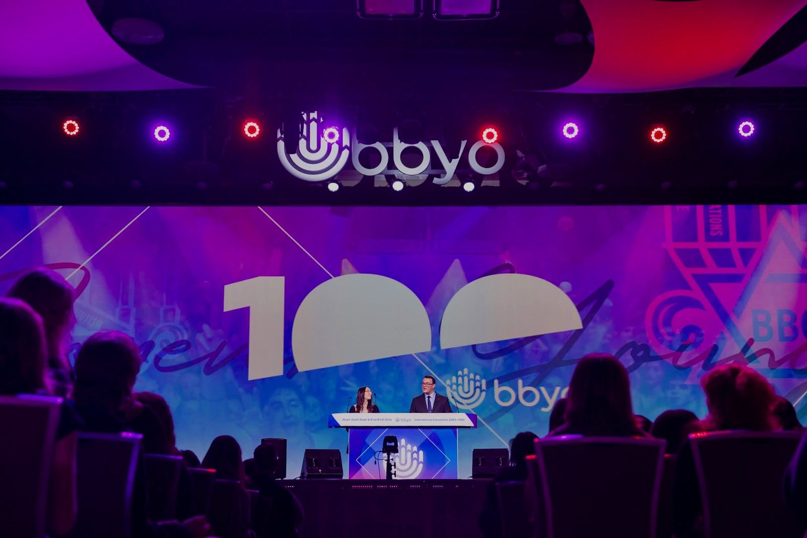

02 / BBYO · International Teen President
Leading a network across 25 countries.
One year working with teen leaders around the world, supporting local chapters, and helping plan a 4,500-person convention.

The role
Coordinate globally. Support locally.
I deferred a year of college to serve as BBYO’s International Teen President. I led a board of 10 peers and worked with a network of more than 1,200 teen leaders in 25 countries, supporting leadership development and engagement across more than 750 chapters.
Traveling to 13 countries and 20 states taught me that a global organization depends on strong local leaders. My job was to listen, share context, and help those leaders act.
The scale
Convention planning at scale.
Alongside governance and co-managing a $60,000 budget, I helped lead a 250+ person team executing a five-day International Convention for 4,500 attendees. I also spoke on BBYO stages before audiences of 5,000+.
The work taught me to set a clear direction, distribute ownership, and keep a large team moving.
